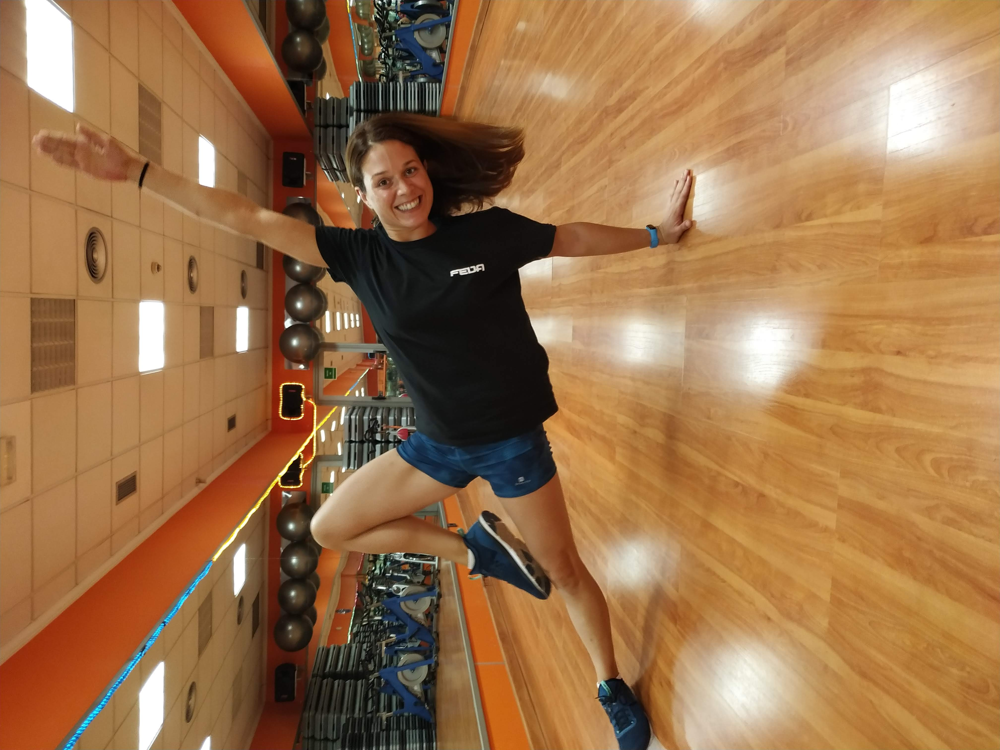
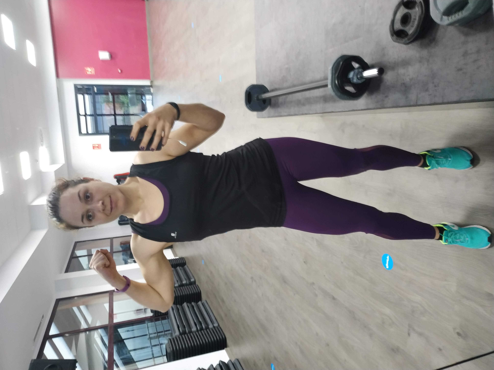
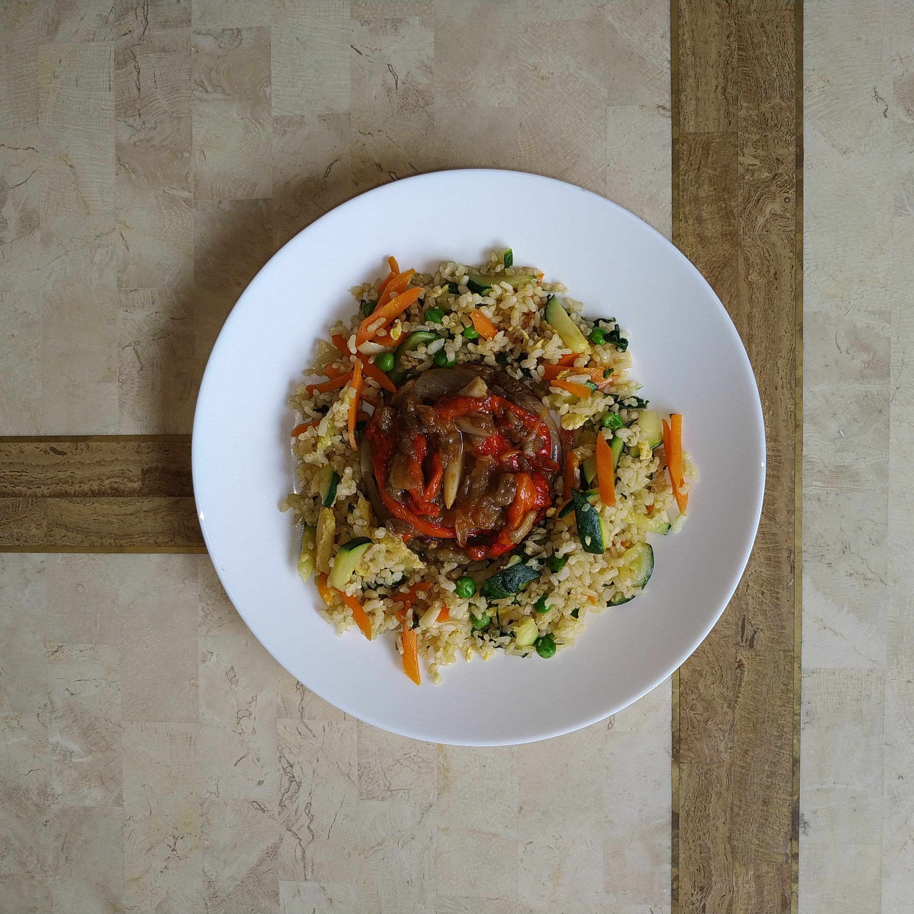
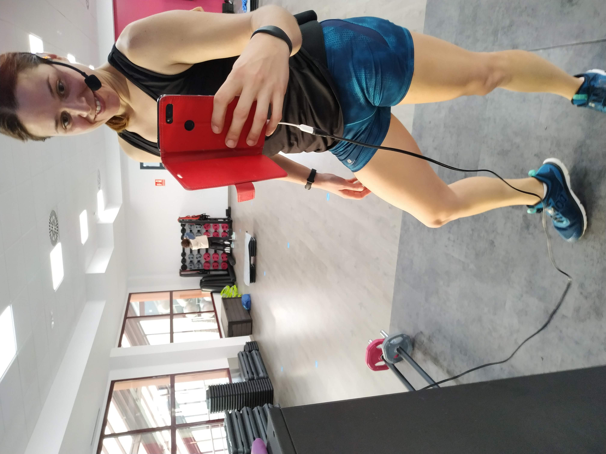
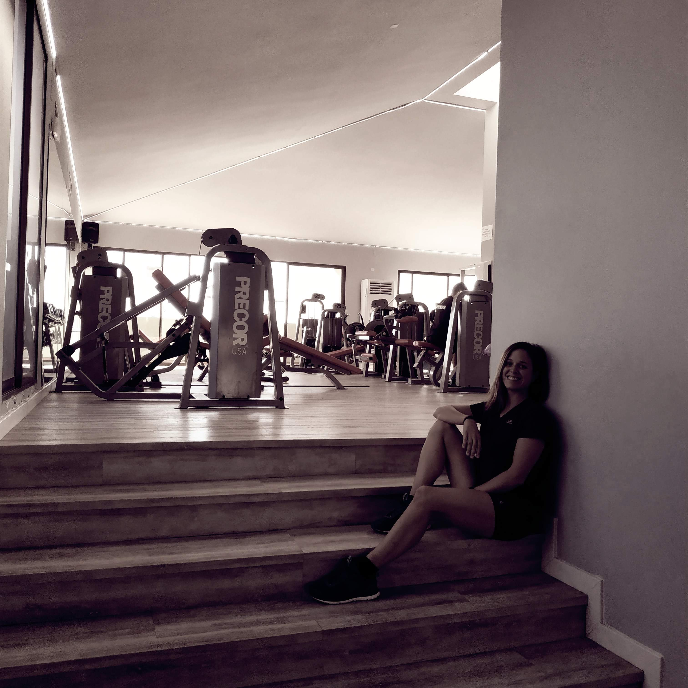

Pilates para principiantes
Empieza tu camino en pilates con esta rutina guiada paso a paso.
PilatesYouTube
Descubre vídeos de movimiento que transforma. Rutinas guiadas, técnica y consejos.
Destacados
Empieza tu camino en pilates con esta rutina guiada paso a paso.
Pilates
Sesión completa para trabajar fuerza, estabilidad y fluidez.
Fuerza
Despierta tu cuerpo con esta sesión de movimiento que transforma.
MovimientoSeries

12 vídeosRutinas completas para entrenar desde casa.

8 vídeosFundamentos de fuerza funcional para cualquier nivel.

10 vídeosRutinas cortas de movilidad para cada día.
 6 vídeos
6 vídeos
Fortalece tu centro con estas rutinas enfocadas.
Beneficios
Acceso libre a todas las rutinas y clases del canal sin coste alguno.
Aprende la técnica correcta y progresa a tu ritmo con niveles diferentes.
Únete a mujeres que comparten la misma búsqueda de bienestar y fuerza consciente.